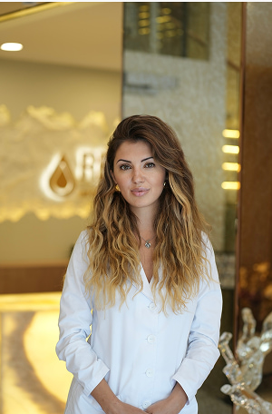
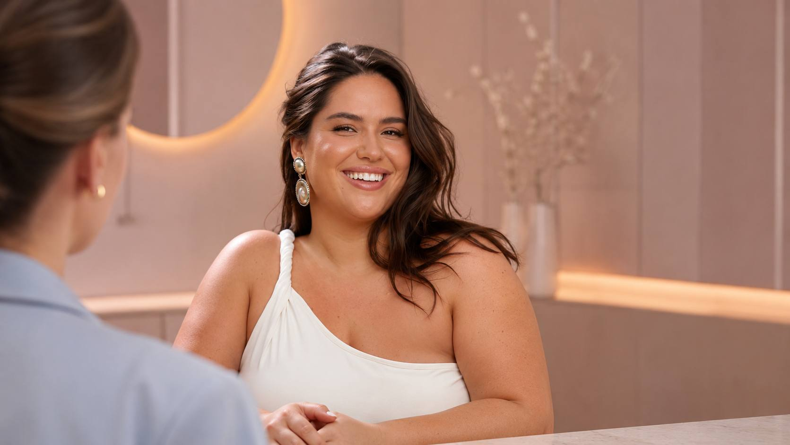
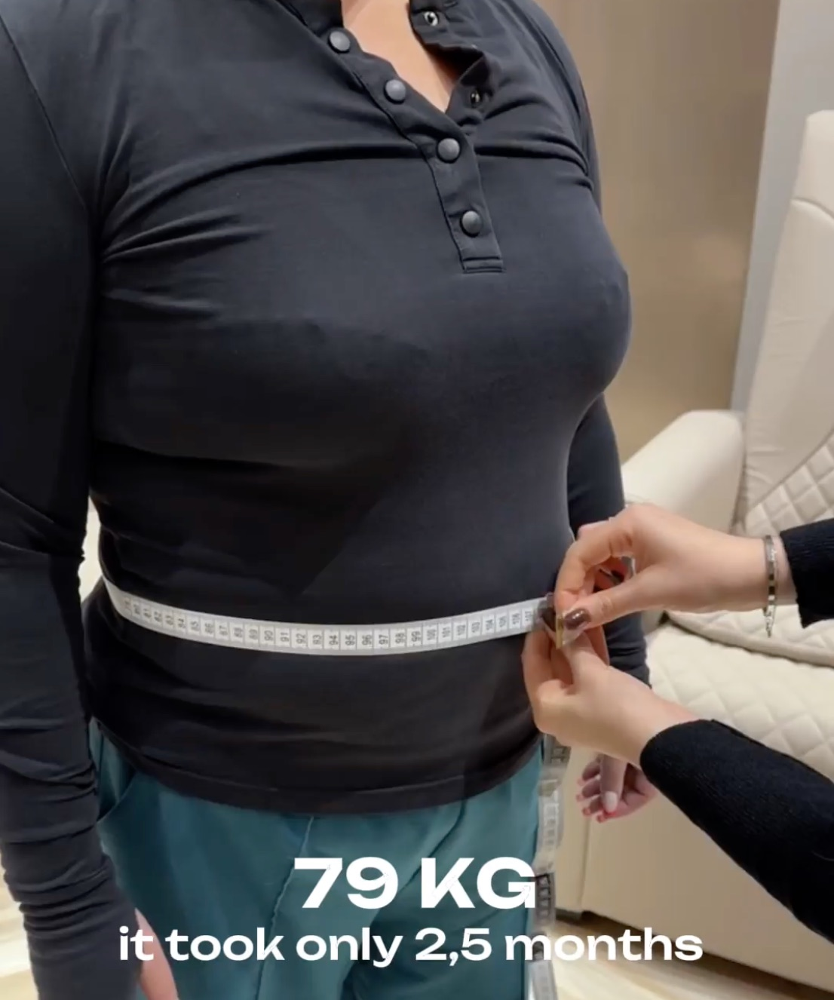
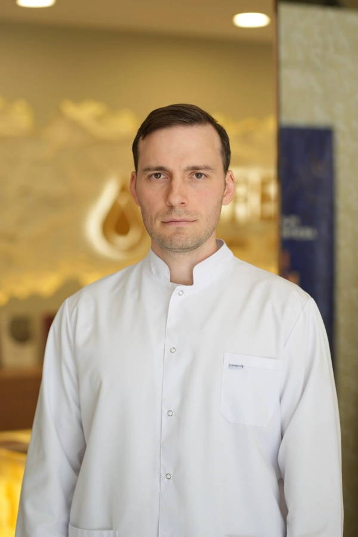
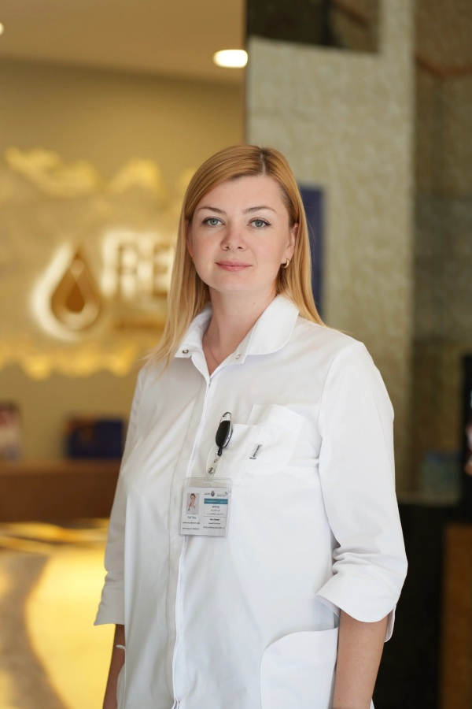
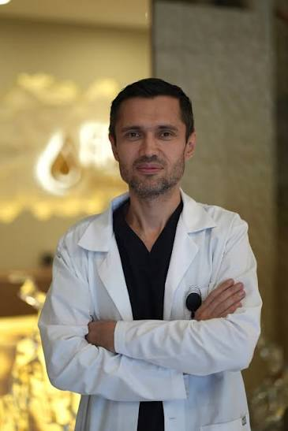
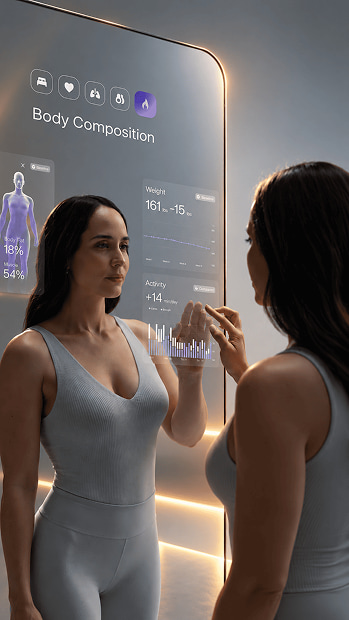
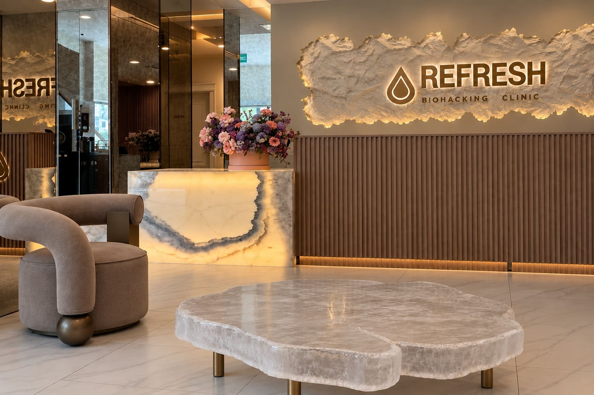

Endocrinologist · 5 years of experience
Dr Viktoria Suprunova
How this doctor supports you
Connects hormonal and metabolic markers with body composition. Assesses eligibility for prescription treatment and monitors tolerability.

Refresh Clinic · Weight loss experts
Weight management starts with understanding your health. Your doctor selects treatment and follows your progress with you.
Patient results

From 79 to 57 kg. A patient’s treatment and progress over 2.5 months.
Individual results. The pace and extent of weight loss vary.
Before / after
Individual results. The pace and extent of weight loss vary.
A team around your outcome

Connects hormonal and metabolic markers with body composition. Assesses eligibility for prescription treatment and monitors tolerability.

Contributes when digestive symptoms, liver markers, nutrition or treatment tolerability affect the plan.

Women's health consultation in Personal+ when indicated.

Cardiovascular health assessment in Personal+ when indicated.
Assessment and treatment
Your doctor reviews weight and health history, medication and previous attempts. Body-composition assessment and relevant tests establish a baseline.
The assessment guides treatment choices. Prescription medication and an individual dose may be considered when indicated.
Follow-up appointments and measurements track progress and tolerability. Your doctor adjusts treatment; a coordinator helps organise visits.
Why medical supervision matters
Repeat measurements help track changes in fat mass and muscle mass separately.
At follow-up visits, your doctor reviews your response to treatment and adjusts prescriptions when needed.
Your health history and test results guide the next steps. Not everyone needs the same set of tests.
Refresh plans
Compare duration, assessments and appointment counts. A coordinator explains the options; a doctor determines the medical treatment.
Extended programmes
A separate introductory offer
An introduction through body-composition assessment and individually selected procedures.
AED 1,599Before booking, ask the team about the injection, IV formulation, consultation arrangements and any additional costs.
Ask about SLIM TrialAssessments and medication options

Shows fat mass, muscle mass and body water. Repeat measurements help show what is changing behind the number on the scale.
Looks beyond the scale to the metabolic context behind weight change.
When clinically appropriate, prescription treatment may become part of a longer pathway — not a one-off procedure.
Additional procedures: what may complement your programme
Refresh lists more than 40 branded protocols. Your doctor selects the formula from your health history, examination and test results.
Your personal coordinator remains available 24/7: organising visits and treatments, answering questions and relaying feedback between appointments.
Patient results
Experiences of treatment and ongoing support.
After three weeks, I was down 4.5 kg — the weight exercise and diets had not shifted.
Review summaryI came to address my iron levels and finished the month 7 kg lighter.
Review summaryTwo months brought a 7 kg change, more energy and greater comfort in my body.
Review summaryThe first consultation lasted almost an hour. Over two months of IV therapy, I lost 8 kg.
Review summaryRefresh Weight Management
Our clinics operate in the UAE, Russia and Kazakhstan. In Dubai, we combine diagnostics, endocrinology, gastroenterology, additional specialist care and personal coordination in one programme.

From first message to first visit
Your first step
During your free consultation, you’ll learn how our programmes work, which methods we use and how to get started. We’ll answer all the questions that matter to you.
Free Consultation